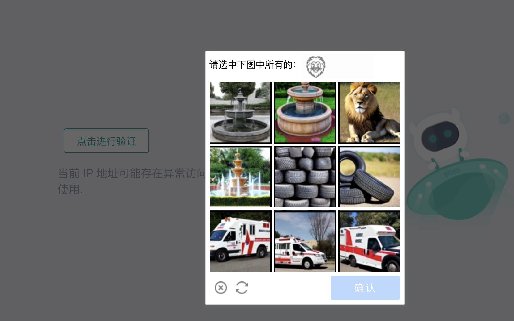
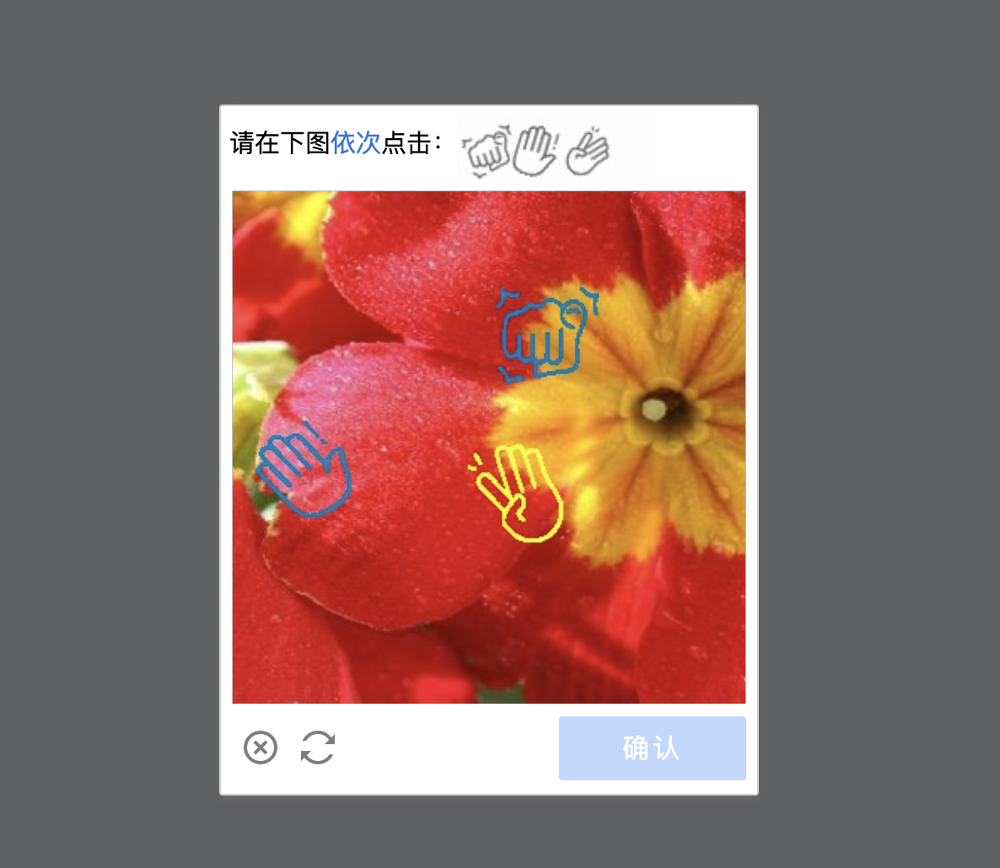

Captcha
Captchas can be really annoying to humans, and it’s even more frustrating when encountered in scraping. Of course, a website developer thinks in the opposite way.
When a captcha appears or gets complicated and scares you, it’s easy to back down on the whole project, claiming that it’s an impossible mission for your programming level; or to jump down the rabbit hole, trying to find a good way and get lost in the challenge.
But… is it okay to just live with captchas and still get the data you want?
At the beginning of a project, it’s easy to say getting as much data as possible for later analyzing. However, bumping into a captcha will be a good time to think about the goal of project, the key research question, the needed data size, and find the most effective way to get the work, or some of the work, done.
Ways to prevent
IP proxy
Changing cookies can change login information, but the IP address still remain the same. Some websites track requests based on IP addresses, so they can flag unusual patterns and identify the scraping bots.
Using a proxy, such as rotating residential or datacenter proxies, can help distribute requests across different IPs, making them appear as if they’re coming from multiple users instead of a single automated script.
There are some proxy tools like CordCloud.
Ways to get around
Human Clicking
The simplest and most straightforward way to deal with captchas is to wait and manually solve them when they appear. If the scraping task is not too large or frequent, this might be an acceptable tradeoff.
Automation tools, like Playwright or DrissionPage, allow pausing execution, letting you manually complete captchas before continuing the script.
It’s okay to have endless loop in the code:
if new_tab.ele('xpath://*[text()="Click to verify"]'): # If the captcha appears
while new_tab.ele('xpath://*[text()="Click to verify"]'): # While the captcha exists
time.sleep(0.5) # Wait and wait, until the captcha disappears because you take action
And it applies to all situation no matter how fancy the captcha is.
Ways to overcome
Auto Clicking
If the captcha is as simple as this, with the same structure and only requires one click on the same button, you can locate the button by css selector and use Playwright or Drissionpage to automatically click it:

In this case, you don’t need to monitor the screen and can go to sleep without worrying taking action every time before the captcha expires in five minutes.
AI…?
Some AI tools might get through those fancy captchas, if you aim for very large data and really can’t keep an eye on the script:
Choose from pictures: 
Click the patterns in the right order: 
But to be honest, I haven’t tried.